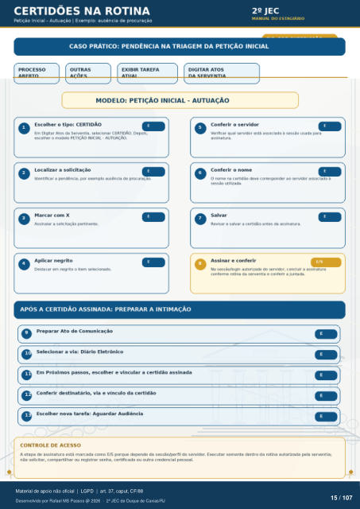

Transcrição automática em português, ainda não revisada. Confira grafia, prazos e termos jurídicos na imagem e no PDF antes de utilizar.
CERTIDÕES NA ROTINA
Petição Inicial - Autuação I Exemplo: ausência de procuração 22 JEC
MANUAL DO ESTAGIÁRIO
CASO PRÁTICO: PENDÊNCIA NA TRIAGEM DA PETIÇÃO INICIAL
PROCESSO
OUTRAS
EXIBIR TAREFA
DIGITAR ATOS
MODELO: PETIÇÃO INICIAL - AUTUAÇÃO
Escolher o tipo: CERTIDÃO Em Digitar Atos da Serventia, CERTIDÃO. Depois,
escolher o modelo PETIÇÃO INICIAL . AUTUAÇÃO. Localizar a solicitação
Identificar a pendência, por exemplo ausência de procuraçào. Marcar com X
Assinalar a solicitação pertinente. Aplicar negrito
Destacar em negrito o item
APÓS A CERTIDÃO ASSINADA: PREPARAR A INTIMAÇÃO
preparar Ato de Comunicação Selecionar a via: Diário Eletrônico
Em Próximos passos, escolher e vincular a certidão assinada Conferir destinatário, via e vínculo da certidão
Escolher nova tarefa: Aguardar Audiência
CONTROLE DE ACESSO
Conferir 0 servidor Verificar qual servidor está asscxiado à sessão usada para
assinatura. Conferir o nome
O nome na certidão deve corresmndor ao servidor asscKiado à sessão utilizada.
Salvar Revisar e salvar a certidão antes da assinatura.
Assinar e conferir Na sossáonogin autorizado do servidor, concluir a assinatura
conforme rotina da serventia e conterir a juntada. A etapa de assinatura está marcada como E/S porque depende da sessao/perfil do servidor. Executar somente dentro da rotina autorizada pela serventia;
nao solicitar, compartilhar ou registrar senha, certificado ou outra credencial pessoal.
Ver também o infográfico original (página 15)
